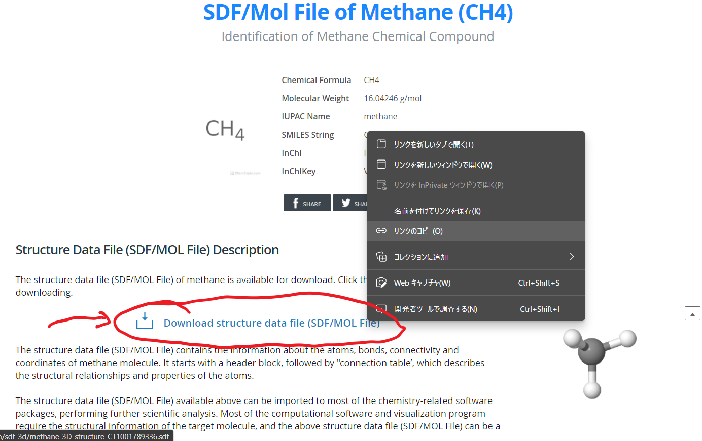

次にに以下のようにWSLで作業用のディレクトリを作っておき、そこに入る。
mkdir -p ~/win/work/methane/
cd ~/win/work/methane/
wget 上記でコピーしたリンクのURL
sudo apt install openbabel
brew install open-babel
babel SDFファイル名 methane.xyz
5
CT1001789336
H 0.00210 -0.00410 0.00200
C -0.01270 1.08580 0.00800
H 1.00990 1.46310 0.00030
H -0.53990 1.44690 -0.87510
H -0.52290 1.43730 0.90480
#
# This was generated by OpenMX Viewer
System.CurrrentDirectory ./
System.Name abc
level.of.stdout 1
level.of.fileout 1
Species.Number 2
<Definition.of.Atomic.Species
H H6.0-s2p1 H_PBE19
C C6.0-s2p2d1 C_PBE19
Definition.of.Atomic.Species>
Atoms.Number 5
Atoms.SpeciesAndCoordinates.Unit Ang
<Atoms.SpeciesAndCoordinates
1 H 0.0021000 -0.0041000 0.0020000 0.5 0.5
2 C -0.0127000 1.0858000 0.0080000 2.0 2.0
3 H 1.0099000 1.4631000 0.0003000 0.5 0.5
4 H -0.5399000 1.4469000 -0.8751000 0.5 0.5
5 H -0.5229000 1.4373000 0.9048000 0.5 0.5
Atoms.SpeciesAndCoordinates>
Atoms.UnitVectors.Unit Ang
<Atoms.UnitVectors
18.0000000 0.0000000 0.0000000
0.0000000 18.0000000 0.0000000
0.0000000 0.0000000 18.0000000
Atoms.UnitVectors>
scf.XcType GGA-PBE
scf.SpinPolarization off
scf.ElectronicTemperature 300.0
scf.energycutoff 220.0
scf.maxIter 100
scf.EigenvalueSolver band
scf.Kgrid 1 1 1
scf.Mixing.Type rmm-diisk
scf.Init.Mixing.Weight 0.05
scf.Min.Mixing.Weight 0.01
scf.Max.Mixing.Weight 0.30
scf.Mixing.History 25
scf.Mixing.StartPulay 15
scf.criterion 1.0e-7
MD.Type nomd
MD.maxIter 1
MD.TimeStep 1.0
MD.Opt.criterion 0.0003
data.path /home/public/program/openmx/DFT_DATA19/
scp abc.dat ユーザー名@gauss.issp.u-tokyo.ac.jp:~/
mkdir -p ~/work/methane/
mv abc.dat ~/work/methane/
cd ~/work/methane/
#!/bin/sh
#PBS -l nodes=1:ppn=5
#PBS -n
source ~/.bashrc
export OMP_NUM_THREADS=1
cd $PBS_O_WORKDIR
mpiexec -hostfile $PBS_NODEFILE /home/public/bin/openmx abc.dat -nt $OMP_NUM_THREADS > ${PBS_JOBID}.out 2>&1
[kawamura@gauss met]$ ls
15761.gauss.out abc.dat abc.dden.cube abc.md abc.out abc.v0.cube abc.xyz dft.sh dft.sh.o15761
abc.cif abc.dat# abc.ene abc.md2 abc.tden.cube abc.vhart.cube abc_rst dft.sh.e15761
scp ユーザー名@gauss.issp.u-tokyo.ac.jp:~/work/methane/*.cube .